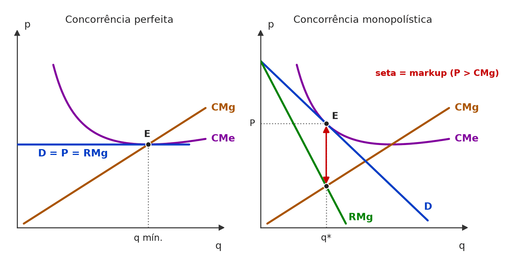
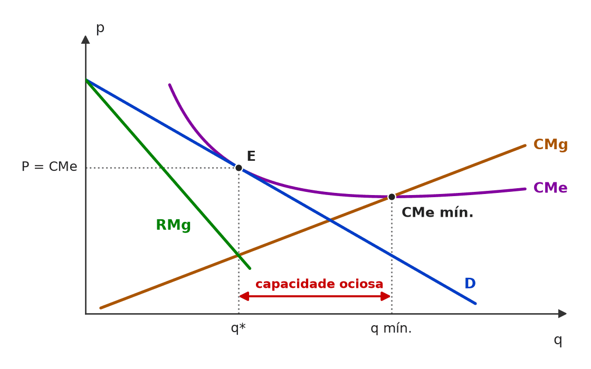
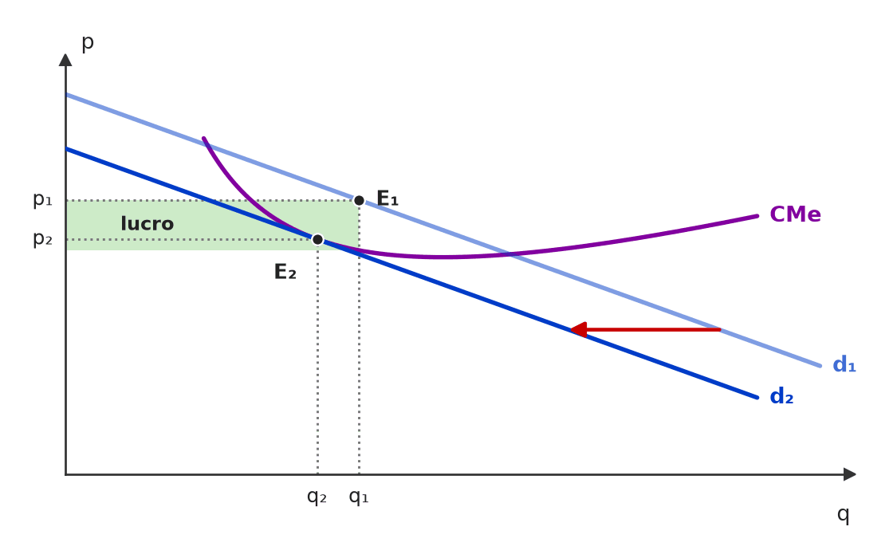
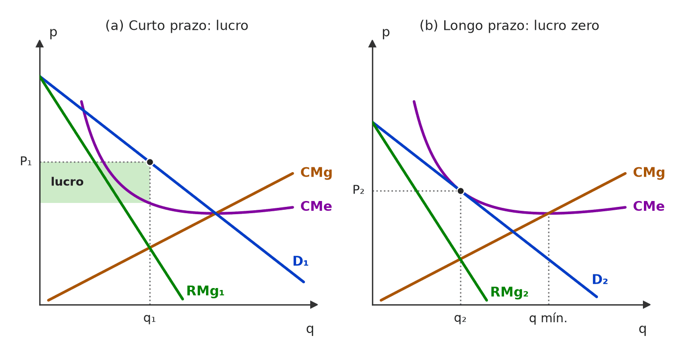
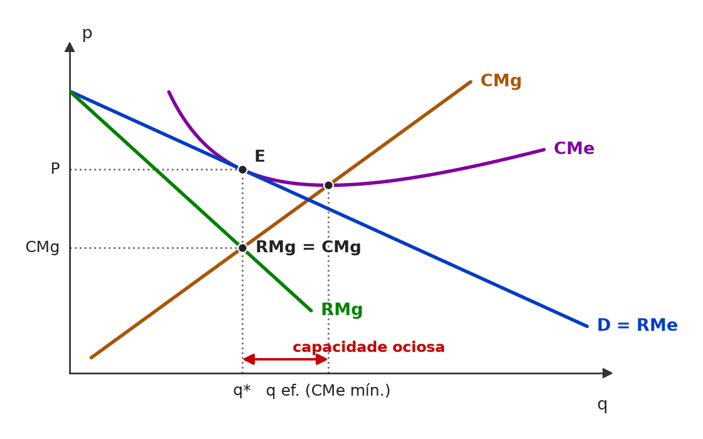

[C/E - CEBRASPE › TJ/PA/2025 › Modelo de Chamberlin]No que se refere a estruturas de mercado, cadeias e redes produtivas, competitividade e estratégia empresarial, julgue o item seguinte. Item: Um mercado monopolisticamente competitivo é caracterizado pela dificultação da entrada de novos competidores e pela diferenciação de produtos altamente substituíveis uns pelos outros. | ❌ ERRADO Um mercado monopolisticamente competitivo é caracterizado pela dificultação da entrada de novos competidores e pela diferenciação de produtos altamente substituíveis uns pelos outros. 🎯 Em poucas palavras: A concorrência monopolística tem livre entrada e saída; barreiras à entrada são traço de oligopólio e monopólio. O resto do item (produtos diferenciados e substitutos próximos) está certo. 📖 Destrinchando o tema:
🧐 Dissecando a redação do item: [troca de conceito] O item mantém o traço verdadeiro (diferenciação) e troca a condição de entrada pela de outra estrutura. Pista: “dificultação da entrada” é incompatível com o lucro nulo de longo prazo que define o modelo. 🔥 CEBRASPE costuma testar a monopolística pela entrada livre. 😈 Para dificultar:
✍️ Reescrita correta: Um mercado monopolisticamente competitivo é caracterizado pela livre entrada de novos competidores e pela diferenciação de produtos altamente substituíveis uns pelos outros. |
[C/E - CEBRASPE › ANTT/2023 › Modelo de Chamberlin]Apesar de o modelo de concorrência perfeita ser o fundamento para os estudos de equilíbrio de mercado, o estudo de mercados reais apresenta outras estruturas, em geral envolvendo a fuga de um ou mais pressupostos da concorrência perfeita. Acerca dessas estruturas de mercado, julgue o item a seguir. Item: O mercado de calçados é um caso de concorrência imperfeita, podendo o diferencial de preços entre calçados ser motivado pela qualidade e pela marca. | ✅ CERTO O mercado de calçados é um caso de concorrência imperfeita, podendo o diferencial de preços entre calçados ser motivado pela qualidade e pela marca. 🎯 Em poucas palavras: Calçados são produtos diferenciados (marca, qualidade, design): falha o pressuposto de homogeneidade, e o mercado é de concorrência monopolística — uma forma de concorrência imperfeita, com preços diferentes entre marcas. 📖 Destrinchando o tema:
🧐 Dissecando a redação do item: [paráfrase fiel · modulador relativo] Item de classificação: a banca usa o termo genérico (“concorrência imperfeita”), que abrange monopolística e oligopólio, e o modulador “podendo”, que torna a segunda parte difícil de falsear. Quem procura erro em “imperfeita” por pensar em “muitas firmas” cai no ERRADO. 😈 Para dificultar:
|
[C/E - Clipping › Simuladão Março/2026 › Modelo de Chamberlin]Acerca da concorrência monopolística, julgue o item a seguir. Item: A concorrência monopolística permite a entrada livre de novas empresas, combinada com diferenciação de produtos; no longo prazo, os lucros econômicos tendem a zero devido à entrada de competidores que diluem o poder de mercado. | ✅ CERTO A concorrência monopolística permite a entrada livre de novas empresas, combinada com diferenciação de produtos; no longo prazo, os lucros econômicos tendem a zero devido à entrada de competidores que diluem o poder de mercado. 🎯 Em poucas palavras: Livre entrada + produto diferenciado: o lucro de curto prazo atrai entrantes, que deslocam a demanda de cada firma para a esquerda até a tangência com o CMe — lucro econômico zero. 📖 Destrinchando o tema:
🧐 Dissecando a redação do item: [paráfrase fiel · modulador relativo] O item descreve o modelo padrão e se protege com “tendem a zero”. O risco é ler “diluem o poder de mercado” como “eliminam” e concluir que P = CMg — o que o item não diz. 🔥 Banca costuma trocar “lucro zero” por “eficiência” ou “P = CMg” para gerar o ERRADO. 😈 Para dificultar:
|
[C/E - IDEG – Prof. Bozan › Pré-TPS/2026 › Modelo de Chamberlin]Considerando as características e as condições de lucro na concorrência monopolística, julgue o item a seguir. Item: Na concorrência monopolística, os agentes possuem uma capacidade ilimitada de determinar o preço dos produtos, semelhante ao monopólio, o que lhes permite ter lucros elevados tanto no curto quanto no longo prazo, independentemente da entrada de novos concorrentes. | ❌ ERRADO Na concorrência monopolística, os agentes possuem uma capacidade ilimitada de determinar o preço dos produtos, semelhante ao monopólio, o que lhes permite ter lucros elevados tanto no curto quanto no longo prazo, independentemente da entrada de novos concorrentes. 🎯 Em poucas palavras: O poder de preço é limitado (há muitos substitutos próximos) e a livre entrada zera o lucro econômico no longo prazo. Lucro elevado só no curto prazo. 📖 Destrinchando o tema:
🧐 Dissecando a redação do item: [modulador absoluto · troca de conceito] Três exageros encadeados: “ilimitada”, “semelhante ao monopólio” e “independentemente da entrada”. O item empresta ao modelo as propriedades do monopólio e ignora a livre entrada, que é a peça-chave. Pista: qualquer “ilimitado” sobre poder de preço é suspeito — nem o monopolista o tem (está preso à demanda). 😈 Para dificultar:
✍️ Reescrita correta: Na concorrência monopolística, os agentes possuem uma capacidade limitada de determinar o preço dos produtos, menor que a do monopólio, o que lhes permite ter lucros elevados apenas no curto prazo, pois a entrada de novos concorrentes os elimina no longo prazo. |
[C/E - IDEG – Prof. Bozan › Pré-TPS/2026 › Modelo de Chamberlin]Considerando as características e as condições de lucro na concorrência monopolística, julgue o item a seguir. Item: Diferentemente de mercados de monopólio, na concorrência monopolística a entrada de novos concorrentes em um mercado sem barreiras tende a rebaixar os lucros exorbitantes de curto prazo, aproximando as condições de mercado de uma concorrência perfeita no longo prazo. | ✅ CERTO Diferentemente de mercados de monopólio, na concorrência monopolística a entrada de novos concorrentes em um mercado sem barreiras tende a rebaixar os lucros exorbitantes de curto prazo, aproximando as condições de mercado de uma concorrência perfeita no longo prazo. 🎯 Em poucas palavras: A livre entrada é o que separa a concorrência monopolística do monopólio: ela dissipa o lucro de curto prazo até P = CMe, como na concorrência perfeita — “aproximando”, não igualando. 📖 Destrinchando o tema:
🧐 Dissecando a redação do item: [modulador relativo · paráfrase fiel] O item é salvo por “tende a” e “aproximando”. Uma versão com “igualando as condições de concorrência perfeita” ou “eliminando a ineficiência” seria ERRADA. O adjetivo “exorbitantes” é retórico e não altera o julgamento. 😈 Para dificultar:
|
[C/E - IDEG – Prof. Bozan › Pré-TPS/2026 › Modelo de Chamberlin]Considerando as características e as condições de lucro na concorrência monopolística, julgue o item a seguir. Item: No curto prazo, as empresas em mercados de concorrência monopolística podem obter lucros extraordinários, pois têm a capacidade de discriminar preços, mesmo com a presença de muitos concorrentes com produtos substitutos próximos. | ✅ CERTO No curto prazo, as empresas em mercados de concorrência monopolística podem obter lucros extraordinários, pois têm a capacidade de discriminar preços, mesmo com a presença de muitos concorrentes com produtos substitutos próximos. 🎯 Em poucas palavras: Lucro extraordinário no curto prazo é possível, porque a diferenciação dá a cada firma algum poder de preço (demanda inclinada). A fonte lê “discriminar preços” como esse poder de fixar o próprio preço. ⚠️ Gabarito contestável: Em sentido técnico, discriminar preços é cobrar preços diferentes pelo mesmo bem, e não é isso que explica o lucro de curto prazo no modelo de Chamberlin: a causa é o poder de mercado gerado pela diferenciação. Uma banca rigorosa poderia dar ERRADO pelo nexo. O CERTO da fonte se sustenta lendo a expressão como “capacidade de fixar preço acima do custo marginal” — firmas com algum poder de mercado também podem, de fato, discriminar. 📖 Destrinchando o tema:
🧐 Dissecando a redação do item: [modulador relativo · detalhe] A conclusão (lucro no curto prazo) está certa e protegida pelo “podem”; o ponto frágil é a justificativa (“discriminar preços”), usada em sentido amplo. Ao julgar itens de curso, confira se a banca usa o termo técnico ou o coloquial. 😈 Para dificultar:
|
[C/E - IDEG – Prof. Bozan › Pré-TPS/2026 › Modelo de Chamberlin]Considerando as características e as condições de lucro na concorrência monopolística, julgue o item a seguir. Item: A concorrência monopolística, apesar de compartilhar características com o monopólio em termos de capacidade de preço, permite a mobilidade de entrada de novos agentes, o que no longo prazo faz com que o mercado se aproxime da estrutura de concorrência perfeita, eliminando os lucros extraordinários. | ✅ CERTO A concorrência monopolística, apesar de compartilhar características com o monopólio em termos de capacidade de preço, permite a mobilidade de entrada de novos agentes, o que no longo prazo faz com que o mercado se aproxime da estrutura de concorrência perfeita, eliminando os lucros extraordinários. 🎯 Em poucas palavras: Estrutura híbrida: do monopólio herda o poder de preço (demanda inclinada); da concorrência perfeita, a livre entrada, que zera o lucro no longo prazo. 📖 Destrinchando o tema:
🧐 Dissecando a redação do item: [paráfrase fiel · modulador relativo] Mais uma variação do mesmo bloco: o item repete a lógica de lucro zero por livre entrada e se protege com “se aproxime”. O verbo decisivo é “eliminando os lucros extraordinários” — e não “eliminando as ineficiências”. 😈 Para dificultar:
|
[C/E - Armstrong › Pré-TPS/2026 › Modelo de Chamberlin]Acerca da concorrência monopolística, julgue o item a seguir. Item: No longo prazo, empresas em concorrência monopolística operam com capacidade plenamente utilizada, de forma que o preço se iguala tanto ao custo marginal quanto ao custo total médio, como na concorrência perfeita. | ❌ ERRADO No longo prazo, empresas em concorrência monopolística operam com capacidade plenamente utilizada, de forma que o preço se iguala tanto ao custo marginal quanto ao custo total médio, como na concorrência perfeita. 🎯 Em poucas palavras: No longo prazo, P = CTMe (lucro zero), mas P > CMg e a produção fica abaixo da escala que minimiza o CTMe: há capacidade ociosa. 📖 Destrinchando o tema:
📈 No gráfico:  Na concorrência perfeita, a demanda da firma é horizontal e toca o CMe no mínimo: P = CMg = CMe. Na concorrência monopolística, a demanda inclinada toca o CMe antes do mínimo: P = CMe, mas o preço fica acima do CMg (a seta vermelha é o markup) e a firma produz menos que a escala eficiente. 🧐 Dissecando a redação do item: [troca de conceito · meia-verdade] O item copia o equilíbrio de longo prazo da concorrência perfeita. Há um pedaço verdadeiro (P = CTMe), cercado de dois enxertos falsos (capacidade plena e P = CMg). Pista: “como na concorrência perfeita” em item de concorrência monopolística costuma ser a armadilha. 🔥 Recorrente em CEBRASPE e simulados. 😈 Para dificultar:
✍️ Reescrita correta: No longo prazo, empresas em concorrência monopolística operam com capacidade ociosa, de forma que o preço se iguala ao custo total médio, mas supera o custo marginal, diferentemente do que ocorre na concorrência perfeita. |
❌ [C/E - Armstrong › Pré-TPS/2026 › Modelo de Chamberlin]Acerca da concorrência monopolística, julgue o item a seguir. Item: Diferentemente da concorrência perfeita, onde o equilíbrio de longo prazo ocorre no ponto de escala eficiente mínima (custo total médio mínimo), na concorrência monopolística as firmas operam com excesso de capacidade (capacidade ociosa) no longo prazo. | ✅ CERTO Diferentemente da concorrência perfeita, onde o equilíbrio de longo prazo ocorre no ponto de escala eficiente mínima (custo total médio mínimo), na concorrência monopolística as firmas operam com excesso de capacidade (capacidade ociosa) no longo prazo. 🎯 Em poucas palavras: É o teorema do excesso de capacidade: a demanda inclinada tangencia o CTMe na parte descendente, antes do mínimo. A firma produz menos do que a escala eficiente. 📖 Destrinchando o tema:
🧐 Dissecando a redação do item: [literalidade] O item enuncia o teorema do excesso de capacidade em linguagem de manual. O risco é o candidato achar que lucro zero implica escala eficiente e marcar ERRADO. Pista: só a demanda horizontal toca o CTMe no mínimo. 😈 Para dificultar:
|
❌ [C/E - Armstrong › Pré-TPS/2026 › Modelo de Chamberlin]Acerca da concorrência monopolística, julgue o item a seguir. Item: No modelo de concorrência monopolística, o equilíbrio de longo prazo caracteriza-se pelo lucro econômico nulo e pela eficiência produtiva, uma vez que a livre entrada de firmas força o preço a se igualar ao custo médio em seu ponto de mínimo. | ❌ ERRADO No modelo de concorrência monopolística, o equilíbrio de longo prazo caracteriza-se pelo lucro econômico nulo e pela eficiência produtiva, uma vez que a livre entrada de firmas força o preço a se igualar ao custo médio em seu ponto de mínimo. 🎯 Em poucas palavras: Lucro nulo, sim; eficiência produtiva, não. A livre entrada leva P ao CMe, mas no ponto de tangência com a demanda inclinada — no trecho descendente do CMe, acima do mínimo. 📖 Destrinchando o tema:
📈 No gráfico:  No longo prazo, a demanda da firma (inclinada) só toca o CMe no trecho descendente, em E: lucro zero, mas com q* à esquerda da quantidade de custo médio mínimo. A distância entre q* e q mín. é a capacidade ociosa; e, em q*, o preço fica acima do CMg. 🧐 Dissecando a redação do item: [meia-verdade · troca de conceito] “Lucro econômico nulo” é verdadeiro e funciona como isca; o erro está em importar da concorrência perfeita a eficiência produtiva e o “ponto de mínimo”. Pista: a justificativa (“livre entrada força P = CMe mínimo”) mistura a causa certa (livre entrada) com o resultado de outro modelo. 😈 Para dificultar:
✍️ Reescrita correta: No modelo de concorrência monopolística, o equilíbrio de longo prazo caracteriza-se pelo lucro econômico nulo e pela ineficiência produtiva (capacidade ociosa), uma vez que a livre entrada de firmas força o preço a se igualar ao custo médio no trecho descendente da curva, à esquerda de seu ponto de mínimo. |
❌ [C/E - Nidi/Jacqueline Bueno › Simulado Junho/2025 › Modelo de Chamberlin]A partir dos conceitos e das teorias usuais de concorrência perfeita, monopólio e oligopólio, julgue (C ou E) o item que se segue. Item: Quando uma nova empresa entra em um mercado monopolisticamente competitivo buscando lucros positivos, a curva de demanda para cada uma das empresas estabelecidas se desloca para dentro, reduzindo o preço e a quantidade recebida por essas empresas. Ou seja, o lançamento de um novo produto por uma empresa reduzirá o preço recebido e a quantidade vendida dos produtos já existentes. | ✅ CERTO Quando uma nova empresa entra em um mercado monopolisticamente competitivo buscando lucros positivos, a curva de demanda para cada uma das empresas estabelecidas se desloca para dentro, reduzindo o preço e a quantidade recebida por essas empresas. Ou seja, o lançamento de um novo produto por uma empresa reduzirá o preço recebido e a quantidade vendida dos produtos já existentes. 🎯 Em poucas palavras: O entrante tira clientes das firmas já instaladas: a demanda de cada uma recua para a esquerda e, no novo ótimo (RMg = CMg), elas vendem menos e a preço menor — é o ajuste que leva o lucro a zero. 📖 Destrinchando o tema:
📈 No gráfico:  A entrada de um concorrente desloca a demanda da firma estabelecida para dentro (d₁ → d₂): ela passa de E₁ (lucro, área verde) a E₂, com preço e quantidade menores, até a demanda só tangenciar o CMe (lucro zero). 🧐 Dissecando a redação do item: [paráfrase fiel · contraintuitivo] O item é uma descrição de manual (modelo de Chamberlin) com reformulação na 2ª frase. A dúvida que derruba o candidato: achar que só a quantidade cai, ou que o preço deveria subir para compensar. Como ambas as curvas (demanda e RMg) recuam, p e q caem juntos. 😈 Para dificultar:
|
[C/E - Nidi/Jacqueline Bueno › Simulado Nidi › Modelo de Chamberlin]Acerca da concorrência monopolística, julgue o item a seguir. Item: Em um mercado de concorrência monopolística não ocorre ineficiência no cenário de longo prazo, dado que o preço se iguala ao custo médio e, portanto, as empresas não operam com excesso de capacidade ociosa. | ❌ ERRADO Em um mercado de concorrência monopolística não ocorre ineficiência no cenário de longo prazo, dado que o preço se iguala ao custo médio e, portanto, as empresas não operam com excesso de capacidade ociosa. 🎯 Em poucas palavras: P = CMe no longo prazo é verdade, mas a igualdade se dá na tangência da demanda com o CMe na parte descendente, antes do mínimo: há capacidade ociosa e P > CMg. 📖 Destrinchando o tema:
🧐 Dissecando a redação do item: [nexo indevido · troca de conceito] A premissa (P = CMe) é verdadeira; o “dado que” e o “portanto” tiram dela uma conclusão que só valeria se o preço igualasse o CMe mínimo, como na concorrência perfeita. Pista: lucro zero não é sinônimo de eficiência. 😈 Para dificultar:
✍️ Reescrita correta: Em um mercado de concorrência monopolística ocorre ineficiência no cenário de longo prazo, embora o preço se iguale ao custo médio: essa igualdade ocorre acima do custo médio mínimo, e as empresas operam com excesso de capacidade ociosa. |
[C/E - Prof. Rodrigo Teixeira › Intensivo Pré-TPS/2023 › Modelo de Chamberlin]A teoria da firma permite analisar a relação entre os custos de produção e as estruturas de mercado. A respeito deste tema, julgue o item a seguir. Item: A competição monopolística é uma estrutura de mercado caracterizada por lucro zero e nível de produção abaixo da escala eficiente, no longo prazo. | ✅ CERTO A competição monopolística é uma estrutura de mercado caracterizada por lucro zero e nível de produção abaixo da escala eficiente, no longo prazo. 🎯 Em poucas palavras: No longo prazo, a entrada empurra a demanda da firma até tangenciar o CMe: lucro zero, num ponto à esquerda do CMe mínimo — capacidade ociosa. 📖 Destrinchando o tema:
📈 No gráfico:  No curto prazo, a firma escolhe q₁ (RMg = CMg) e cobra P₁ acima do CMe: há lucro. A entrada de concorrentes desloca a demanda de cada firma para a esquerda até ela tangenciar o CMe em q₂: lucro zero, com q₂ abaixo da escala de custo médio mínimo e P₂ acima do CMg. 🧐 Dissecando a redação do item: [literalidade] Item-síntese que combina as duas marcas do longo prazo. O risco é achar que “lucro zero” obriga a produzir na escala eficiente, como na concorrência perfeita. “Competição monopolística” é só outro nome para concorrência monopolística. 😈 Para dificultar:
|
[C/E - Prof. Rodrigo Teixeira › Intensivo Pré-TPS/2023 › Modelo de Chamberlin]A respeito da teoria da firma, julgue o item a seguir. Item: Num mercado em que a concorrência entre as firmas ocorre pela diferenciação de produto, a taxa de mark up será menor quanto mais firmas houver neste mercado e quanto menor for o grau de diferenciação do produto. | ✅ CERTO Num mercado em que a concorrência entre as firmas ocorre pela diferenciação de produto, a taxa de mark up será menor quanto mais firmas houver neste mercado e quanto menor for o grau de diferenciação do produto. 🎯 Em poucas palavras: Markup = 1/|ε| (Lerner). Mais firmas e produtos mais parecidos tornam a demanda de cada firma mais elástica — e o markup encolhe. 📖 Destrinchando o tema:
🧐 Dissecando a redação do item: [literalidade] O item aplica Lerner à concorrência monopolística com duas variáveis no mesmo sentido. O risco é inverter uma delas (“menor diferenciação → markup maior”). Pista: tudo que aproxima o mercado da concorrência perfeita reduz o markup. 😈 Para dificultar:
|
[C/E - Prof. Rodrigo Teixeira › Intensivo Pré-TPS/2023 › Modelo de Chamberlin]A respeito dos conceitos e teorias da microeconomia, julgue os itens a seguir. Item: O equilíbrio de competição monopolística no longo prazo caracteriza-se por produção abaixo da escala eficiente, porém a livre entrada e saída de firmas levará ao resultado idêntico ao da competição perfeita, com preço igual ao custo marginal. | ❌ ERRADO O equilíbrio de competição monopolística no longo prazo caracteriza-se por produção abaixo da escala eficiente, porém a livre entrada e saída de firmas levará ao resultado idêntico ao da competição perfeita, com preço igual ao custo marginal. 🎯 Em poucas palavras: A livre entrada zera o lucro econômico (P = CMe), como na concorrência perfeita, mas não iguala preço e custo marginal: com demanda inclinada, P > RMg = CMg. 📖 Destrinchando o tema:
📈 No gráfico:  Longo prazo na concorrência monopolística: a demanda da firma tangencia o CMe em q* (P = CMe, lucro zero), mas o preço fica acima do CMg — e q* fica à esquerda da escala eficiente (CMe mínimo): capacidade ociosa. 🧐 Dissecando a redação do item: [meia-verdade · troca de conceito] A 1ª oração (produção abaixo da escala eficiente) é verdadeira e dá confiança; depois do “porém”, o item transporta para a monopolística a condição P = CMg, que é exclusiva da concorrência perfeita. Pista: lucro zero (P = CMe) não implica P = CMg. 🔥 A banca alterna “lucro zero” (CERTO) e “P = CMg” (ERRADO) no mesmo bloco. 😈 Para dificultar:
✍️ Reescrita correta: O equilíbrio de competição monopolística no longo prazo caracteriza-se por produção abaixo da escala eficiente, porém a livre entrada e saída de firmas levará ao lucro econômico nulo, como na competição perfeita, mas com preço superior ao custo marginal. |
[DISC - Prof. Rodrigo Teixeira › Intensivo Pré-TPS/2023 › Modelo de Chamberlin]Responda à questão a seguir, sobre estruturas de mercado. Questão: Caracterize e diferencie o mercado de competição perfeita do mercado de competição monopolística, inclusive em seu equilíbrio. | 🔵 RESPOSTA Semelhanças: muitas firmas, livre entrada e saída e lucro econômico nulo no longo prazo. Diferenças: na competição perfeita o produto é homogêneo, a firma é tomadora de preço (demanda horizontal) e o equilíbrio de longo prazo tem P = CMg = CMe mínimo; na monopolística o produto é diferenciado, a demanda da firma é negativamente inclinada e o equilíbrio de longo prazo é a tangência da demanda com o CMe, com P = CMe > CMg e produção abaixo da escala eficiente (capacidade ociosa). 🎯 Em poucas palavras: As duas estruturas têm muitas firmas, livre entrada e lucro zero no longo prazo; o que muda é a diferenciação do produto, que dá à firma monopolística demanda inclinada e, daí, P > CMg e capacidade ociosa. 📖 Destrinchando o tema:
🧐 Dissecando a redação do item: [exercício aberto] Em C/E, a banca recorta essa comparação em itens como “no longo prazo, a firma monopolisticamente competitiva tem lucro zero” (CERTO), “produz no CMe mínimo” (ERRADO) ou “cobra preço igual ao custo marginal” (ERRADO). 😈 Para dificultar:
|
[C/E - Prof. Rodrigo Teixeira › Intensivo Pré-TPS/2023 › Modelo de Chamberlin]A respeito da teoria da firma, julgue os itens a seguir. Item: Num mercado em que a concorrência entre as firmas ocorre pela diferenciação de produto, a taxa de markup será menor quanto mais firmas houver neste mercado e quanto menor for o grau de diferenciação do produto. | ✅ CERTO Num mercado em que a concorrência entre as firmas ocorre pela diferenciação de produto, a taxa de markup será menor quanto mais firmas houver neste mercado e quanto menor for o grau de diferenciação do produto. 🎯 Em poucas palavras: O markup depende da elasticidade da demanda da firma: mais concorrentes e produtos mais parecidos = mais substitutos próximos = demanda mais elástica = margem menor. 📖 Destrinchando o tema:
🧐 Dissecando a redação do item: [paráfrase fiel] O item reescreve a relação markup × elasticidade sem citar a elasticidade: a dupla condição (“mais firmas” e “menor diferenciação”) aponta no mesmo sentido. Armadilha possível: ler “menor grau de diferenciação” como aumento de poder de mercado. 😈 Para dificultar:
|
[C/E - Prof. Rodrigo Teixeira › Intensivo Pré-TPS/2023 › Modelo de Chamberlin]Sobre as diferentes estruturas de mercado, julgue as afirmações a seguir. Item: No longo prazo, a competição monopolística caracteriza-se por lucros zero, ainda que persista o poder de monopólio, pois a livre entrada e saída de firmas faz cessar os lucros. Porém, permanece o problema da escala de produção não ser eficiente. | ✅ CERTO No longo prazo, a competição monopolística caracteriza-se por lucros zero, ainda que persista o poder de monopólio, pois a livre entrada e saída de firmas faz cessar os lucros. Porém, permanece o problema da escala de produção não ser eficiente. 🎯 Em poucas palavras: Entrada livre zera o lucro (P = CMe), mas a diferenciação mantém a demanda inclinada — poder de mercado com P > CMg — e a tangência ocorre antes do CMe mínimo: escala ineficiente. 📖 Destrinchando o tema:
🧐 Dissecando a redação do item: [contraintuitivo · paráfrase fiel] O item junta duas ideias que parecem contraditórias (“lucros zero” e “poder de monopólio”) para induzir o ERRADO. A chave é separar lucro (P × CMe) de poder de mercado (P × CMg). O “Porém” final está certo: a escala continua ineficiente. 😈 Para dificultar:
|
❌ [C/E - Nidi/Jacqueline Bueno › Modelo de Chamberlin]Considerando as diversas estruturas de mercado, suas semelhanças e diferenças, julgue (C ou E) o item a seguir. Item: O modelo de competição monopolística está entre os dois modelos extremos: concorrência perfeita e monopólio. Isso porque os produtos são heterogêneos, mas são substitutos próximos; cada empresa tem o monopólio da sua marca ou sobre uma característica do seu produto, mas todos competem acirradamente. Assim, o equilíbrio não ocorre como no mercado de concorrência perfeita, no qual preço é igual a custo marginal, mas no ponto onde preço se iguala ao custo médio. | ⚪ ANULADO O modelo de competição monopolística está entre os dois modelos extremos: concorrência perfeita e monopólio. Isso porque os produtos são heterogêneos, mas são substitutos próximos; cada empresa tem o monopólio da sua marca ou sobre uma característica do seu produto, mas todos competem acirradamente. Assim, o equilíbrio não ocorre como no mercado de concorrência perfeita, no qual preço é igual a custo marginal, mas no ponto onde preço se iguala ao custo médio. 🎯 Em poucas palavras: Tudo está certo, exceto que P = CMe só vale no longo prazo; no curto prazo a firma pode ter lucro ou prejuízo. Sem o horizonte temporal, o item foi anulado (gabarito preliminar: CERTO). ⚠️ Gabarito contestável: Anulação. O gabarito preliminar era CERTO; foi alterado para ANULADO porque o item não especifica o prazo: no curto prazo, a firma monopolisticamente competitiva produz onde RMg = CMg e pode cobrar P > CMe (lucro) ou P < CMe (prejuízo). Com “no longo prazo” inserido, o item seria CERTO. 📖 Destrinchando o tema:
🧐 Dissecando a redação do item: [outro: omissão do horizonte temporal] O item é uma paráfrase correta do manual que perdeu a qualificação “no longo prazo”. Ao julgar, desconfie de afirmações sobre lucro zero ou P = CMe sem prazo explícito: em C/E isso pode bastar para ERRADO ou, como aqui, para anulação. 😈 Para dificultar:
✍️ Reescrita correta: [...] Assim, o equilíbrio não ocorre como no mercado de concorrência perfeita, no qual preço é igual a custo marginal, mas, no longo prazo, no ponto onde preço se iguala ao custo médio. |